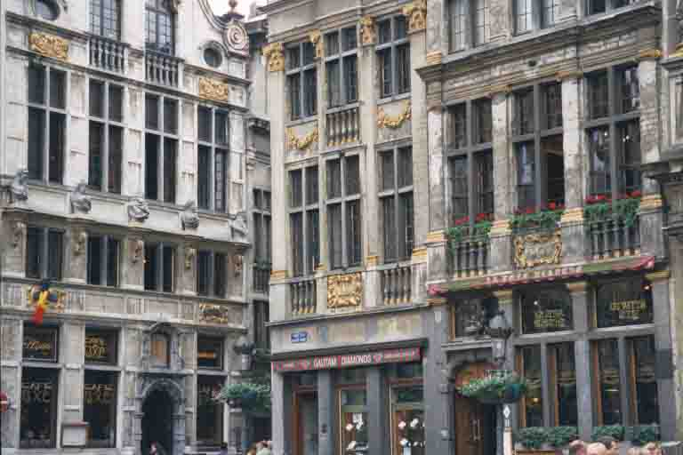
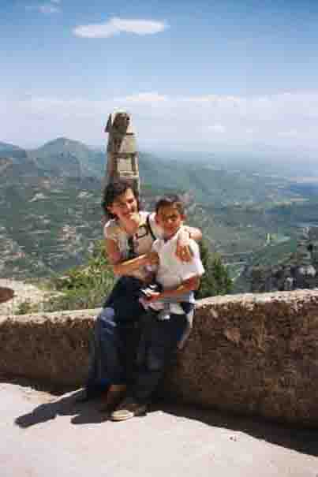
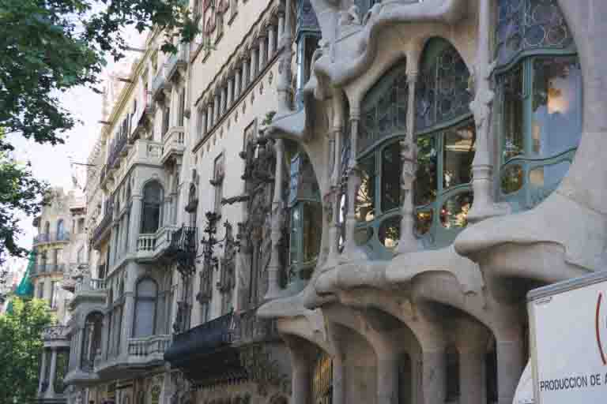
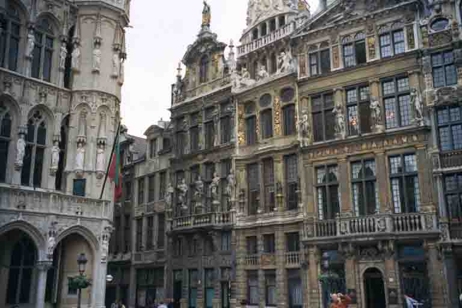

June 28, 2002 • Hull, United Kingdom • by sue_and_nathan
Belgian beer, football and itchy feet
Hull, United Kingdom
Early one morning just as the sun was rising we donned our backpacks for the last time and disembarked from the ferry at Hull. This was to be our last journey on our yearaway. But, let me not go any further before I tell you about the trip across Western Europe that got us to this point.
From Prague we caught a train to Moenchengladbach in Germany where Sue’s brother, Gerry, and his family live. We spent our time there being bought back up-to-date with current culture by Sue’s nephews. Steve played us some of the latest Slip Knot tunes while Sean told us all about ‘new metal’. We also discovered the Euro, which is something that wasn’t around before we left. We spent an enjoyable few days with them, but no sooner had we arrived than it was time to move on again.
After a few days of relaxing in the sunshine at our friend Mati’s house in St Vincencs, Spain, we thought it was time to get out and explore the nearby capital of Catalonia, Barcelona. 2002 is the year of Gaudi and so we visited a few examples of his very beautiful, but very strange architecture. The Sagrada Familia is his most famous building, and possibly the most famous building in Barcelona. It’s hard to explain what it actually is, but it looks like a cathedral with several tall spires topped with bowls of fruit, but in reality it is little more than a façade. Gaudi spent the last 15 years of his life working on this great cathedral, but died before he could complete it. It should have had enough room for 1500 singers, 700 children and 5 organs, but to this day remains unfinished.
Barcelona is one of the loveliest cities in Europe and we spent many hours just wandering along La Rambla (a pedestrianised walkway where you ‘ramble’) amongst flower stalls, human statues and bird sellers, watching Catalonian life go by. A boat harboured in the old dock was the setting for a wonderful tapas lunch complete with a bottle of local Cava and lots of sunshine.
Our final stop in Europe was Brussels where we were staying with our friends, Che and James. We drunk coffee on the Grand Place, probably one of the best looking town squares in Europe, and drunk beers in trendy cafes whilst pretending to be real Europeans! After the jubilation of the start of the World Cup we embarked upon some day trips including one to a town called Orval in the Ardennes, which is home to the Trappist monastery where Orval beer is brewed. Our main aim, of course, was to watch the beer being made, but after we arrived we discovered that this was not possible so we piled into the nearest ‘auberge’ to try it instead! We sat happily in the sunshine for a good couple of hours enjoying Ardennes pate washed down with the strong local brew. As we have often said during the last 14 months – ‘life is good!’
So, back to where I began this entry - Hull. As we stepped onto English soil it sure felt weird. After all the amazing places we’ve been and there we were in the rain in Hull! Quite an unpleasant bump down to earth, I can tell you.
Two weeks of the English summer and we are slowly getting our lives back in order (I mean, can you imagine 14 months of mail to open?) and getting back into the swing of things, or ‘back to reality’ as a lot of people have said. We have our diaries, hundreds of photographs and, of course, all the bits and pieces we’ve collected on the way (which I’ve often grumbled about to Sue, but am secretly very pleased we kept now that we’re home!) and of course this website to help us reminisce. But best of all we have had some amazing experiences and now they are priceless memories that I wouldn’t exchange for the world!
Many people have asked ‘So, has 14 months of travel cured your itchy feet?’ All I can say as I flick through the pages of the Lonely Planet Guide to Alaska is, well . . . probably not - at least, not this time!

More of the Grand Place, Brussels

Mati and son, Eddi at Montserrat, Spain

One of Guadi's many weird building in Barcelona

The Grand Place, Brussels